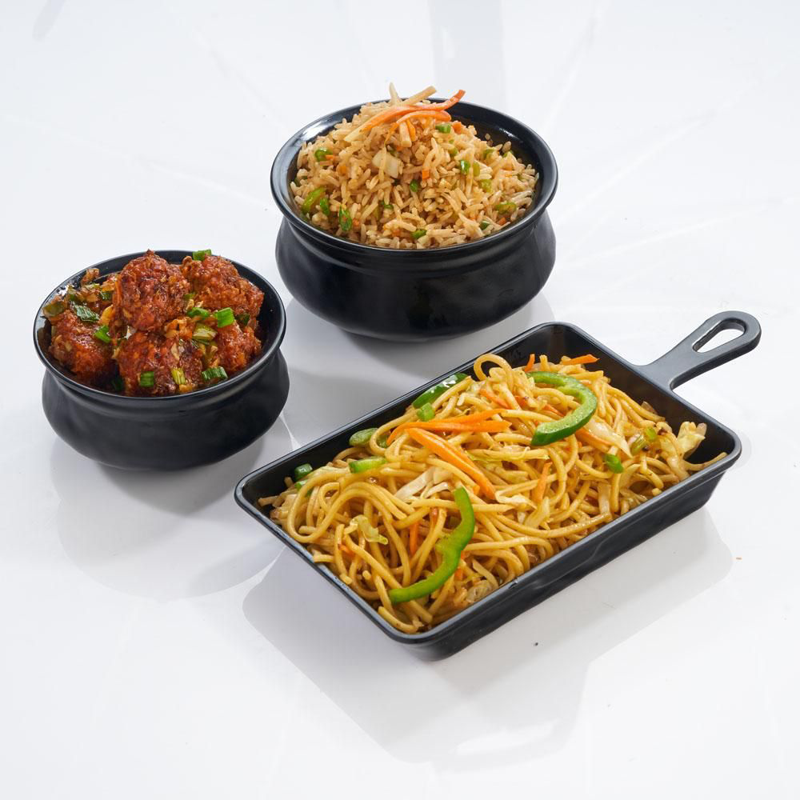
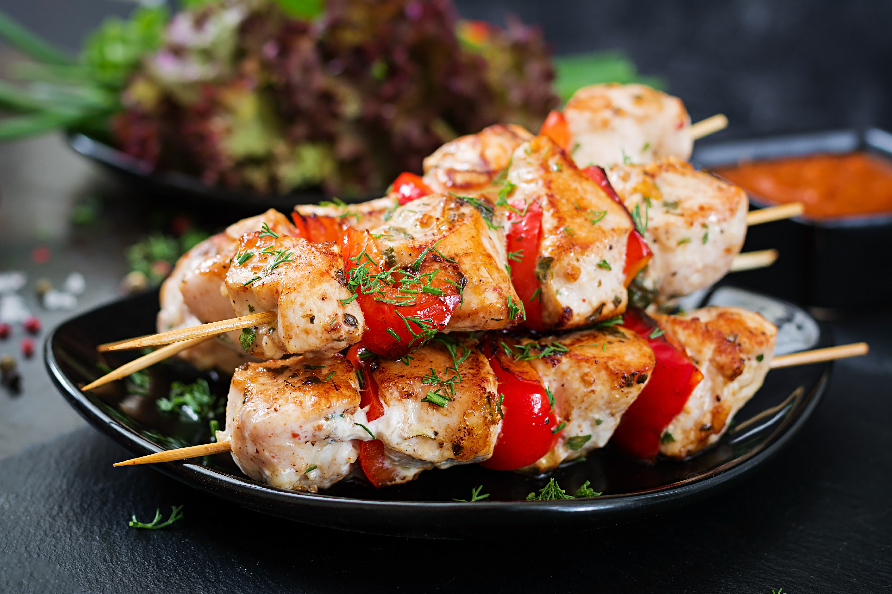
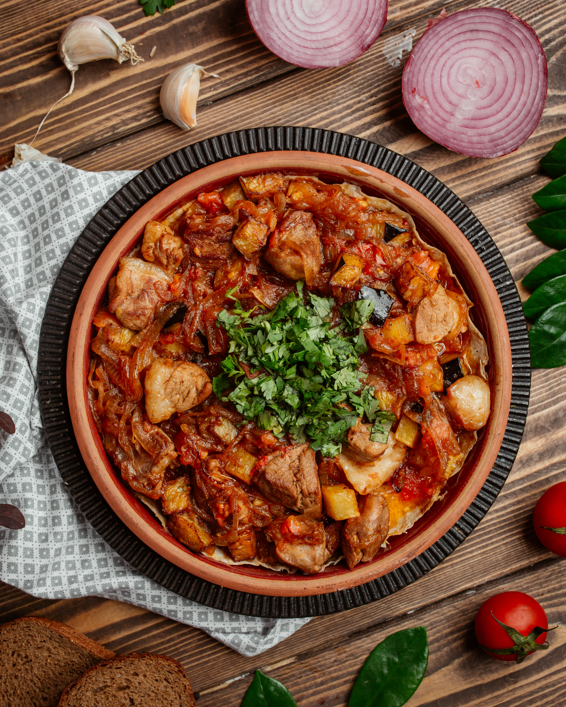
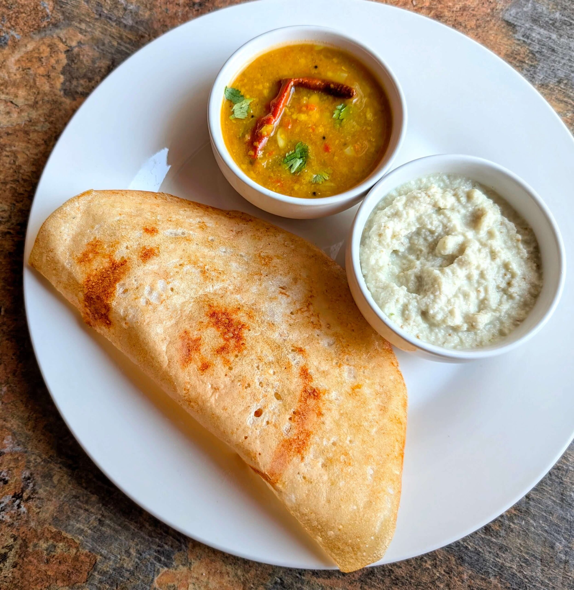
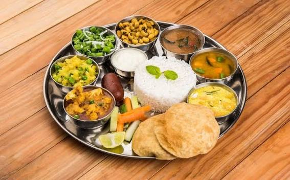
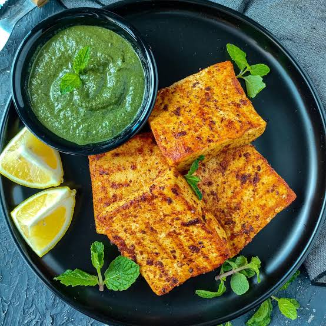
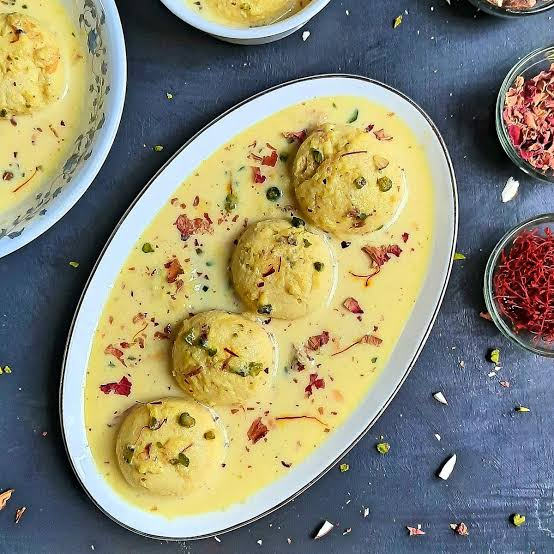

Pasta
Pasta is an unleavened dough made from wheat flour (typically durum semolina) and water or eggs.

Chineese combo
Dilecous Chicken with Noddels, This food is a distinct fusion that adopts Chinese seasoning and cooking techniques to Indian taste often characterised by the use of soy sauce, chilli sauce, vinegar and ginger-garlic pastes.

Chicken skewers
Grilled chicken skewers,a dish common in many 's cuisines where cubed meat is threatened onto sticks and grilled.

Rosted lamb
This is a hearty, savory dish where Succulent chunks of lamb are slow-cooked or sauteed with onions and a blend of spices. It is often served in a traditional earthenware bowl To retain heat and enhance the rustic flavor.

Dosa
Dosa a South Indian dish made from a fermented rice and lentil Better. It served with two bowls of accompaniments, like Sambar and coconut chutney.

Veg Thalli
A veg thali is a traditional Indian meal served on a round platter, featuring a balanced variety of vegetarian dishes in small bowls (katories) to cover sweet, salty, sour, bitter, pungent, and astringent flavors.

Paneer Tikka
Paneer Tikka is a popular North Indian vegetarian appetizer made from chunks of paneer (Indian cottage cheese) marinated in spiced yogurt and grilled

Rasmalai
Rasmalai is a popular South Asian dessert consisting of soft, spongy paneer (cottage cheese) dumplings soaked in a rich, thickened, and sweetened milk syrup (rabri)